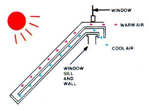

Wouldn’t you love to heat your home with free energy from the sun? There are simple, inexpensive, do-it-yourself solar projects that can reduce your heating bills.
The sun’s energy can be captured by homemade solar hot-air collectors and thermosiphoning panels to provide free heat. The units direct air warmed by the sun through a window or wall opening into the adjoining room.
If you're serious about cutting your home heating bills this winter, one of these inexpensive, do-it-yourself projects will help:
Solar Heat Grabber
Build this simple solar heater that hangs outside of a window and sends free heat from the sun into a room.
Building Plan for the Solar Heat Grabber
You can build a heat grabber from this detailed, large-scale plan.
Building Plan for a Solar Hot-air Collector
This shed-type hot air collector will help heat your house in the winter and offer storage space in the summer.
The Hot-Line Solar Collector
This is similar to a conventional flat-plate solar collector, but what makes this panel unique is that it contains a specially curved reflector which acts to concentrate incoming sunlight on a wedge-shaped absorption tube.
Storm Window Solar Heating Panels
This article details how to use recycled storm windows to make a solar hot-air collector that delivers heat into the home through a vent installed in a south-facing wall or window.
Solar Hot Air Panel
Build this wall-mounted, thermosiphoning air panel (TAP) to heat a room in your house with the power of the sun.
Ultra-simple Solar Hot-air Wall Heater
This unit is made by covering a 9-by-14-foot framework of 1-by-6-inch boards with clear plastic, mounting the panel on a south-facing wall and installing top and bottom vents into the home.
Recycled Can Solar Hot-Air Heater
Aluminum cans, cut in half, are used to construct the absorber plate for this double-glazed solar hot-air collector. Temperatures in the collector reach more than 200 degrees, and the original unit reduced the heating costs of a New England church by more than 60 percent.
Super Easy, Super Low-cost Solar Hot Air Corrugated Collector
You can build this wall-mounted 8-foot by 12-foot hot air collector, using corrugated fiberglass, to help heat your home.
Automatic Collector Control
The corrugated hot hair collector (above) will be more efficient with this automatic thermostat control.
Inexpensive Solar Hot Air Collector
You can heat a 30-foot by 40-foot building with this wall-mounted, solar collector.
|
 J. WEILAND If you have at least one unshaded, south-facing window, you can use a solar heat grabber to direct warm air into your home. |
|
|